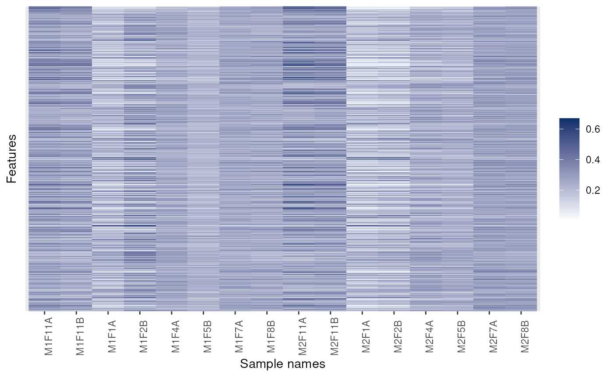
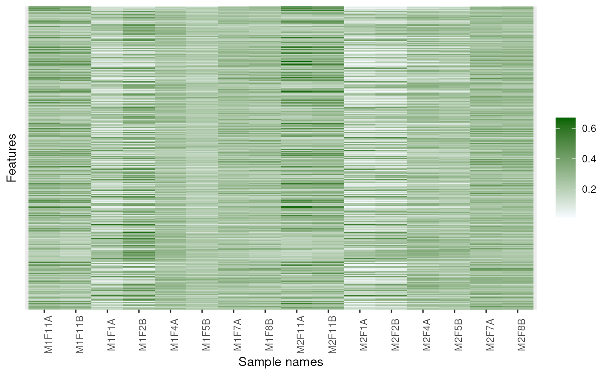
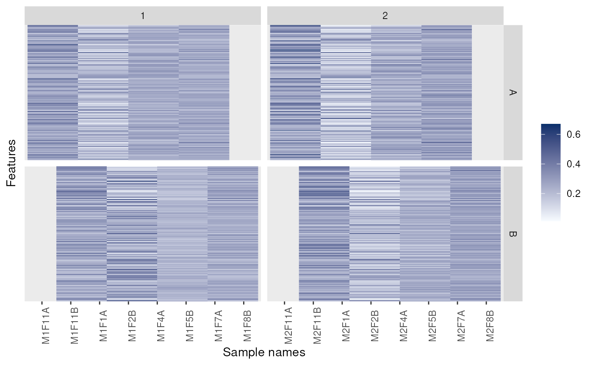
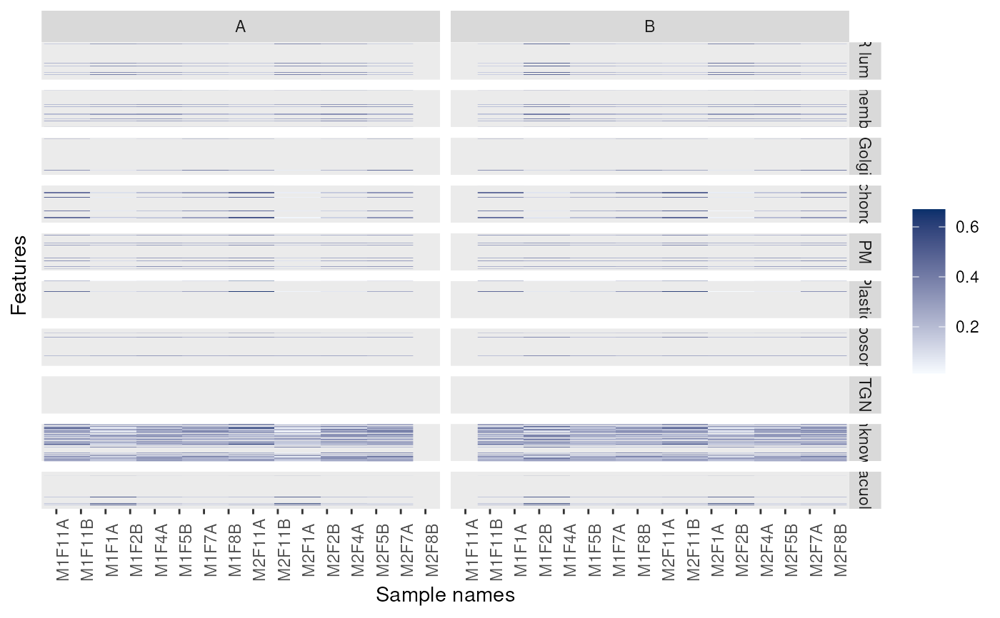
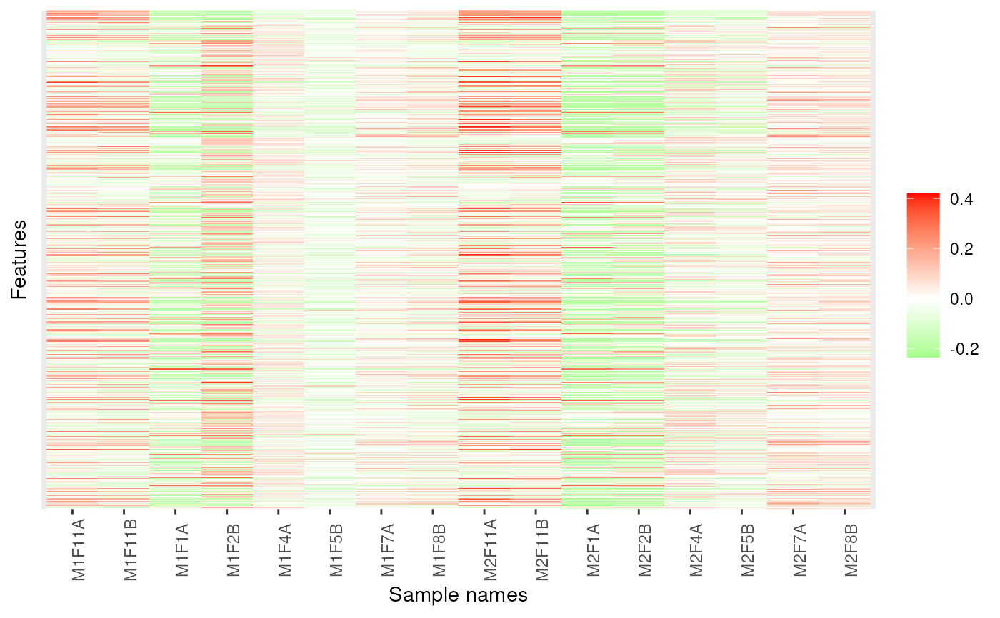
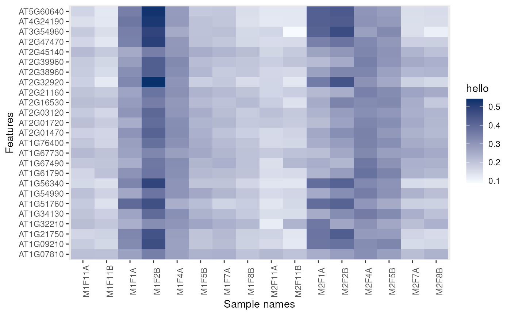

The "MSnSet" Class for MS Proteomics Expression Data and Meta-Data
MSnSet-class.RdThe MSnSet holds quantified expression data for MS proteomics
data and the experimental meta-data.
The MSnSet class is derived from the
"eSet" class and mimics the
"ExpressionSet" class classically used for
microarray data.
Objects from the Class
The constructor MSnSet(exprs, fData, pData) can be used to
create MSnSet instances. Argument exprs is a
matrix and fData and pData must be of class
data.frame or "AnnotatedDataFrame" and all
must meet the dimensions and name validity constrains.
Objects can also be created by calls of the form new("MSnSet",
exprs, ...). See also "ExpressionSet" for
helpful information. Expression data produced from other softwares
can thus make use of this standardized data container to benefit
R and Bioconductor packages. Proteomics expression data
available as spreadsheets, as produced by third-party software such as
Proteome Discoverer, MaxQuant, ... can be imported using the
readMSnSet and readMSnSet2 functions.
Coercion methods are also available to transform MSnSet objects
to IBSpectra, to data.frame and to/from
ExpressionSet and SummarizedExperiment objects. In the
latter case, the metadata available in the protocolData,
experimentData are completely dropped, and only the logging
information of the processingData slot is retained. All these
metadata can be subsequently be added using the
addMSnSetMetadata (see examples below). When converting a
SummarizedExperiment to an MSnSet, the respective
metadata slots will be populated if available in the
SummarizedExperiment metadata.
In the frame of the MSnbase package, MSnSet instances
can be generated from "MSnExp" experiments using
the quantify method).
Slots
qual:Object of class
"data.frame"that records peaks data for each of the reporter ions to be used as quality metrics.processingData:Object of class
"MSnProcess"that records all processing.assayData:Object of class
"assayData"containing a matrix with equal with column number equal tonrow(phenoData).assayDatamust contain a matrixexprswith rows represening features (e.g., reporters ions) and columns representing samples. See the"AssayData"class,exprsandassayDataaccessor for more details. This slot in indirectly inherited from"eSet".phenoData:Object of class
"AnnotatedDataFrame"containing experimenter-supplied variables describing sample (i.e the individual tags for an labelled MS experiment) (indireclty inherited from"eSet"). SeephenoDataand the"eSet"class for more details. This slot can be accessed as adata.framewithpDataand be replaced by a new valid (i.e. of compatible dimensions and row names)data.framewithpData()<-.featureData:Object of class
"AnnotatedDataFrame"containing variables describing features (spectra in our case), e.g. identificaiton data, peptide sequence, identification score,... (inherited indirectly from"eSet"). SeefeatureDataand the"eSet"class for more details. This slot can be accessed as adata.framewithfDataand be replaced by a new valid (i.e. of compatible dimensions and row names)data.framewithfData()<-.experimentData:Object of class
"MIAPE", containing details of experimental methods (inherited from"eSet"). SeeexperimentDataand the"eSet"class for more details.annotation:not used here.
protocolData:Object of class
"AnnotatedDataFrame"containing equipment-generated variables (inherited indirectly from"eSet"). SeeprotocolDataand the"eSet"class for more details..__classVersion__:Object of class
"Versions"describing the versions of R, the Biobase package,"eSet","pSet"andMSnSetof the current instance. Intended for developer use and debugging (inherited indirectly from"eSet").
Extends
Class "eSet", directly.
Class "VersionedBiobase", by class "eSet", distance 2.
Class "Versioned", by class "eSet", distance 3.
Methods
MSnSet specific methods or over-riding it's super-class are described
below. See also more "eSet" for
inherited methods.
-
%% \item{$name}{\code{signature(x = "pSet")}: Access \code{name} column
%% in \code{featureData}. Note that this behaviour is different to
%% the \code{eSet}, where \code{$} accesses the \code{phenoData}. }
- acquisitionNum
acquisitionNum(signature(object = "MSnSet")): Returns the a numeric vector with acquisition number of each spectrum. The vector names are the corresponding spectrum names. The information is extracted from the object'sfeatureDataslot.- fromFile
fromFile(signature(object = "MSnSet")): get the index of the file (infileNames(object)) from which the raw spectra from which the corresponding feature were originally read. The relevant information is extracted from the object'sfeatureDataslot. Returns a numeric vector with names corresponding to the spectrum names.- dim
signature(x = "MSnSet"): Returns the dimensions of object's assay data, i.e the number of samples and the number of features.- fileNames
signature(object = "MSnSet"): Access file names in theprocessingDataslot.- msInfo
signature(object = "MSnSet"): Prints the MIAPE-MS meta-data stored in theexperimentDataslot.- processingData
signature(object = "MSnSet"): Access theprocessingDataslot.- show
signature(object = "MSnSet"): Displays object content as text.- qual
signature(object = "MSnSet"): Access the reporter ion peaks description.- purityCorrect
signature(object = "MSnSet", impurities = "matrix"): performs reporter ions purity correction. SeepurityCorrectdocumentation for more details.- normalise
signature(object = "MSnSet"): PerformsMSnSetnormalisation. Seenormalisefor more details.- t
signature(x = "MSnSet"): Returns a transposedMSnSetobject where features are now aligned along columns and samples along rows and thephenoDataandfeatureDataslots have been swapped. TheprotocolDataslot is always dropped.- as(,"ExpressionSet")
signature(x = "MSnSet"): Coerce object fromMSnSettoExpressionSet-class. TheexperimentDataslot is converted to aMIAMEinstance. It is also possible to coerce anExpressionSetto andMSnSet, in which case theexperimentDataslot is newly initialised.- as(,"IBSpectra")
signature(x = "MSnSet"): Coerce object fromMSnSettoIBSpectrafrom theisobarpackage.- as(,"data.frame")
signature(x = "MSnSet"): Coerce object fromMSnSettodata.frame. TheMSnSetis transposed and thePhenoDataslot is appended.- as(,"SummarizedExperiment")
signature(x = "MSnSet"): Coerce object fromMSnSettoSummarizedExperiment. Only part of the metadata is retained. SeeaddMSnSetMetadataand the example below for details.
%% \item{ratios}{\code{signature(object = "MSnSet")}: ... }
- write.exprs
signature(x = "MSnSet")
Writes expression values
to a tab-separated file (default is - combine
signature(x = "MSnSet", y = "MSnSet", ...)
Combines
2 or more - topN
signature(object = "MSnSet", groupBy, n = 3, fun, ..., verbose = isMSnbaseVerbose())
Selects the - filterNA
signature(object = "MSnSet", pNA = "numeric", pattern = "character", droplevels = "logical")
This method
subsets - filterZero
signature(object = "MSnSet", pNA = "numeric", pattern = "character", droplevels = "logical")
As
- filterMsLevel
signature(object = "MSnSet", msLevel. = "numeric", fcol = "character")
Keeps only spectra with level
- log
signature(object = "MSnSet", base = "numeric")
Log
transforms - droplevels
signature(x = "MSnSet", ...)
Drops the unused
factor levels in the - impute
signature(object = "MSnSet", ...)
Performs data imputation on the - trimws
signature(object = "MSnSet", ...)
Trim leading and/or
trailing white spaces in the feature data slot. Also available for
tmp.txt). The
fDataCols parameter can be used to specify which
featureData columns (as column names, column number or
logical) to append on the right of the expression matrix.
The following arguments are the same as write.table.
MSnSet instances according to their feature names.
Note that the qual slot and the processing information are
silently dropped.
n most intense features (typically peptides or
spectra) out of all available for each set defined by
groupBy (typically proteins) and creates a new instance of
class MSnSet. If less than n features are available,
all are selected. The ncol(object) features are summerised
using fun (default is sum) prior to be ordered in
decreasing order. Additional parameters can be passed to
fun through ..., for instance to control the
behaviour of topN in case of NA values.
(Works also with matrix instances.)
See also the nQuants function to retrieve the
actual number of retained peptides out of n.
A complete use case using topN and nQuants is
detailed in the synapter package vignette.
object by removing features that have (strictly)
more than pNA percent of NA values. Default pNA is
0, which removes any feature that exhibits missing data.
The method can also be used with a character pattern composed of
0 or 1 characters only. A 0 represent a
column/sample that is allowed a missing values, while
columns/samples with and 1 must not have NAs.
This method also accepts matrix
instances. droplevels defines whether unused levels in the
feature meta-data ought to be lost. Default is TRUE.
See the droplevels method below.
See also the is.na.MSnSet and plotNA
methods for missing data exploration.
filterNA, but for zeros.
msLevel., as defined by the fcol feature variable
(default is "msLevel").
exprs(object) using
base::log. base (defaults is e='exp(1)') must
be a positive or complex number, the base with respect to which
logarithms are computed.
featureData slot. See
droplevels for details.
MSnSet object.
See impute for more details.
data.frame objects. See ?base::trimws
for details.
Additional accessors for the experimental metadata
(experimentData slot) are defined. See
"MIAPE" for details.
Plotting
- meanSdPlot
signature(object = "MSnSet") Plots row
standard deviations versus row means. See
- image
signature(x = "MSnSet", facetBy = "character", sOrderBy = "character", legend = "character", low = "character", high = "character", fnames = "logical", nmax = "numeric")Produces an heatmap of expression values in the
- plotNA
signature(object = "MSnSet", pNA = "numeric")
Plots missing data for an - MAplot
signature(object = "MSnSet", log.it = "logical", base = "numeric", ...)
Produces MA plots (Ratio as a function
of average intensity) for the samples in - addIdentificationData
signature(object = "MSnSet", ...): Adds identification data to aMSnSetinstance. SeeaddIdentificationDatadocumentation for more details and examples.- removeNoId
signature(object = "MSnSet", fcol = "pepseq", keep = NULL): Removes non-identified features. SeeremoveNoIddocumentation for more details and examples.- removeMultipleAssignment
signature(object = "MSnSet", fcol = "nprot"): Removes protein groups (or feature belong to protein groups) with more than one member. The latter is defined by extracting a feature variable (default is"nprot"). Also removes non-identified features/- idSummary
signature(object = "MSnSet", ...): Prints a summary that lists the percentage of identified features per file (calledcoverage).
meanSdPlot (vsn package) for more details.
x object. Simple horizontal facetting is enabled by
passing a single character as facetBy. Arbitrary
facetting can be performed manually by saving the return value
of the method (see example below). Re-ordering of the samples is
possible by providing the name of a phenotypic variable to
sOrderBy. The title of the legend can be set with
legend and the colours with the low and
high arguments. If any negative value is detected in the
data, the values are considered as log fold-changes and a
divergent colour scale is used. Otherwise, a gradient from low
to high is used. To scale the quantitative data in x
prior to plotting, please see the scale method.
When there are more than nmax (default is 50)
features/rows, these are not printed. This behaviour can be
controlled by setting fnames to TRUE (always
print) or FALSE (never print). See examples below.
The code is based on Vlad Petyuk's
vp.misc::image_msnset. The previous version of this
method is still available through the image2 function.
MSnSet instance. pNA is a
numeric of length 1 that specifies the percentage
of accepted missing data values per features. This value will be
highlighted with a point on the figure, illustrating the overall
percentage of NA values in the full data set and the number of
proteins retained. Default is 1/2. See also
plotNA.
object. If
ncol(object) == 2, then one MA plot is produced using the
ma.plot function from the affy package. If
object has more than 2 columns, then
mva.pairs. log.it specifies is the data
should be log-transformed (default is TRUE) using
base. Further ... arguments will be passed to the
respective functions.
Functions
- updateFvarLabels
signature(object, label, sep)
This
function updates - updateSampleNames
signature(object, label, sep)
This
function updates - updateFeatureNames
signature(object, label, sep)
This
function updates - ms2df
signature(x, fcols)
Coerces the - addMSnSetMetadata
signature(x, y)
When coercing an
object's featureData variable labels by
appending label. By default, label is the variable
name and the separator sep is ..
object's sample names by appending
label. By default, label is the variable name and
the separator sep is ..
object's feature names by appending
label. By default, label is the variable name and
the separator sep is ..
MSnSet instance
to a data.frame. The direction of the data is retained and
the feature variable labels that match fcol are appended to
the expression values. See also as(x, "data.frame") above.
MSnSet y to a SummarizedExperiment x
with x <- as(y, "SummarizedExperiment"), most of y's
metadata is lost. Only the file names, the processing log and the
MSnbase version from the processingData slots are passed
along. The addMSnSetMetadata function can be used to add
the complete processingData, experimentData and
protocolData slots. The downside of this is that MSnbase is
now required to use the SummarizedExperiment object.
Author
Laurent Gatto <lg390@cam.ac.uk>
See also
"eSet", "ExpressionSet" and
quantify. MSnSet quantitation values and
annotation can be exported to a file with
write.exprs. See readMSnSet to
create and MSnSet using data available in a spreadsheet or
data.frame.
Examples
data(msnset) msnset <- msnset[10:15] exprs(msnset)[1, c(1, 4)] <- NA exprs(msnset)[2, c(1, 2)] <- NA is.na(msnset)#> iTRAQ4.114 iTRAQ4.115 iTRAQ4.116 iTRAQ4.117 #> X18 TRUE FALSE FALSE TRUE #> X19 TRUE TRUE FALSE FALSE #> X2 FALSE FALSE FALSE FALSE #> X20 FALSE FALSE FALSE FALSE #> X21 FALSE FALSE FALSE FALSE #> X22 FALSE FALSE FALSE FALSEfeatureNames(filterNA(msnset, pNA = 1/4))#> [1] "X2" "X20" "X21" "X22"featureNames(filterNA(msnset, pattern = "0110"))#> [1] "X18" "X2" "X20" "X21" "X22"M <- matrix(rnorm(12), 4) pd <- data.frame(otherpdata = letters[1:3]) fd <- data.frame(otherfdata = letters[1:4]) x0 <- MSnSet(M, fd, pd) sampleNames(x0)#> [1] "1" "2" "3"M <- matrix(rnorm(12), 4) colnames(M) <- LETTERS[1:3] rownames(M) <- paste0("id", LETTERS[1:4]) pd <- data.frame(otherpdata = letters[1:3]) rownames(pd) <- colnames(M) fd <- data.frame(otherfdata = letters[1:4]) rownames(fd) <- rownames(M) x <- MSnSet(M, fd, pd) sampleNames(x)#> [1] "A" "B" "C"library("ggplot2") ## for facet_grid p + facet_grid(replicate ~ membrane.prep, scales = 'free', space = 'free')## Feature names are displayed by default for smaller data dunkley2006 <- dunkley2006[1:25, ] image(dunkley2006)## Coercion if (require("SummarizedExperiment")) { data(msnset) se <- as(msnset, "SummarizedExperiment") metadata(se) ## only logging se <- addMSnSetMetadata(se, msnset) metadata(se) ## all metadata msnset2 <- as(se, "MSnSet") processingData(msnset2) }#>#>#>#> #>#> #> #>#> #>#> #> #> #> #> #> #> #> #> #> #> #> #> #> #> #> #>#> #> #>#>#>#>#> - - - Processing information - - - #> Data loaded: Wed May 11 18:54:39 2011 #> iTRAQ4 quantification by trapezoidation: Wed Apr 1 21:41:53 2015 #> Subset [55,4][6,4] Mon Dec 28 20:09:42 2020 #> MSnbase version: 1.1.22#> ExpressionSet (storageMode: lockedEnvironment) #> assayData: 6 features, 4 samples #> element names: exprs #> protocolData: none #> phenoData #> sampleNames: iTRAQ4.114 iTRAQ4.115 iTRAQ4.116 iTRAQ4.117 #> varLabels: mz reporters #> varMetadata: labelDescription #> featureData #> featureNames: X18 X19 ... X22 (6 total) #> fvarLabels: spectrum ProteinAccession ... collision.energy (15 total) #> fvarMetadata: labelDescription #> experimentData: use 'experimentData(object)' #> Annotation: No annotation